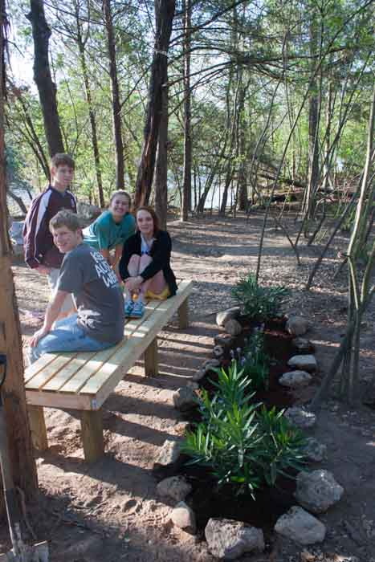

Austin Green Space
Lucy Gift, Robbert Phillips, Noah Remmert, Emily Robbins, & Luke Wright
The Issue
"Greenspaces are critical elements of a health-promoting community" (CDC)
60% of the world's population will live in cities by 2025 (Urbanization)

"World population to reach 8.1B in 2025" (UN: World Population)

Air pollution kills over 2 million annually (Air Pollution)

Only 1.5% of the land in Istanbul, Turkey is public green space (World Cities)

We Austin
We're doing really well
- 36 acres park/1,000 people (10 best cities)
- 18% of Austin is parkland (10 best cities)
But things aren't perfect
- Rapid growth
- 59% of inner-city residents don't live within walking distance of a park (KUT)
- 123 employees available to maintain Austin's 14,911 acres of parkland (KUT)
- Austinites pay an average of $41 per resident for parks compared to the national average of $75 (KUT)
Take Action in Austin
Taking action in Austin is simple. Consider one of the following actions!
- Help The Trail Foundation
- Clean up a park you love
- Vote for bills to fund the parks system and support politicians who prioritize local parks
Our Project
After seeing the green spaces present in Costa Rica while traveling on a school trip, we were inspired to research the global impact of parks and public spaces.
Through interviews with local experts, we determined that the main need in Austin's parks was general improvement and maintenance. In response to that, we improved a popular local spot people bring their dogs to by adding a bench and a flower bed.

Works Cited
Wendel, Arthur M, MD. "How Community Design and Greenspace Impact Public Health." CDC. Presentation.
"Urbanization and Global Change." University of Michigan, 2002. Web. 23 Apr. 2014.
Olson, Alexandra. "U.N.: World Population to Reach 8.1B in 2025." USA Today. Gannett, 13 June 2013. Web. 23 Apr. 2014.
Knight, Matthew. "Air Pollution Killing over Two Million Annually, Study Says." CNN. Cable News Network, 16 June 2013. Web. 23 Apr. 2014.
"% of Public Green Space (parks and Gardens)." World Cities Culture Report. World Cities Culture Forum, 2014. Web. 23 Apr. 2014.
"10 Best Cities for Urban Forests." American Forests. American Forests. Web. 23 Apr. 2014.
Bernier, Nathan. "59 Percent Of Austin's Inner City Residents Don't Live Near Park." KUT.org. KUT, 31 Jan. 2011. Web. 23 Apr. 2014.